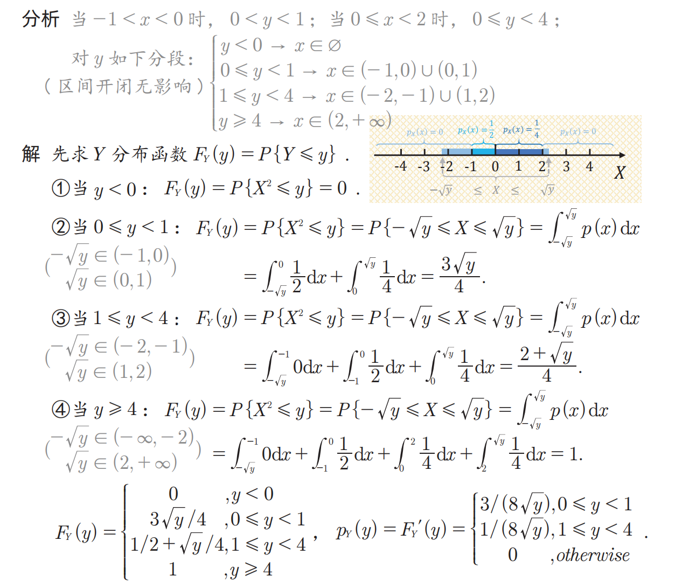

概率论习题(2)
t15
设随机变量 X 的分布函数为
求 $P\{X=1\}$
解析
根据事件概率与分布函数极限的关系有
随机变量的分布，《知识点总结》的 $\S 2.1$
t16
设随机变量 $X$ 的分布函数为
试求 $X$ 的概率分布列及 $P(X<3), p(x \leqslant 3),>1), P(X \geqslant 1)$.
解析
大致想象一下 $F(x)$ 的图像为阶梯状，这对应离散随机变量的分布函数形状，所以可以写出 $X$ 的分布列：
$X$ 的概率分布列为
可以看到在 $F(x)$ 中分段点的值为 $X$ 的取值。
随机变量的分布，《知识点总结》的 $\S 2.1$
t17
设随机变量 $X$ 的概率密度为 $f(x)=\left\{\begin{array}{c}1-C|x|,-1<x<1 \\ 0, \text { 其他 }\end{array}\right.$
（1）求 $C$ 的值；
（2）求 $Y=X^2+1$ 的概率密度。
解析
（1）利用密度函数的正则性：
（2）由于
故当 $1 \leqslant y<2$ 时, 有
$Y$ 的分布函数为
$Y$ 的密度函数为
$ps:$ 一个检查 $Y$ 密度函数正确性的技巧，$Y$ 的密度函数不为 $0$ 的区间，一定是 $X$ 不为 $0$ 的区间通过变换得到的。比如 $t17$ ，$X$ 的密度函数不为 $0$ 的区间为 $(-1,1)$ ，则 $X^2+1$ 后变为 $(1,2)$ ，即 $Y$ 密度函数不为 $0$ 的区间。
随机变量的分布，分布函数与概率密度函数，随机变量函数的分布《知识点总结》的 $\S 2.1 、2.6$
t18
设随机变量 $X$ 的期望存在，概率密度 $p(x)$ 关于 $x=\mu$ 对称： $p(\mu+x)=p(\mu-x)$ ，证明： $E(x)=\mu$.
解析
$\quad \text { 记 } f(t) =t p(t+\mu) \quad f(-t)=-t p(\mu-t)=-t p(t+\mu) \Rightarrow f(t)+f(-t)=0 \quad f(t) \text { 为奇函数，所以后一项积分值为0}$
t19
国际市场上对我国某种出口商品的每年需求量是个随机变量 $X$ (吨). $X$ 服从区间 $[300,500]$ 上的均匀分布.每销售出一吨商品, 可为国家赚取外汇1.5千元; 若销售不出, 则每吨商品需贮存费 0.5 千元. 求: 应组织多少货源,才能使平均收益最大?
解析
设组织该货源 $a$ 吨. 则显然应该有 $300 \leqslant a \leqslant 500$. 又记 $Y$ 为在 $a$ 吨货源的条件下的收益额 (单位:千元), 则收益额 $Y$ 为需求量 $X$ 的函数, 即 $Y=g(X)$. 由题设条件知: 当 $X \geqslant a$ 时, 则此 $a$ 吨货源全部售出, 共获利 $1.5 a$. 当 $X<a$ 时, 则售出 $X$ 吨 (获利 $1.5 X$ ), 且还有 $a-X$ 吨积压 (获利 $-0.5(a-X)$ ), 所以共获利 $1.5 X-0.5(a-X)$,由此知
所以当 $a=450$ 时可以获利最大。
随机变量函数的数学期望，随机变量函数的分布《知识点总结》的 $\S 2.2$
t20
试证: 对任意的常数 $c \neq E(X)$, 有
解析
常用的技巧：加一项减一项
由于 $c \neq E(X)$, 所以 $(E(X)-c)^2>0$, 由此得
t21
已知某商场一天来的顾客数 $X$ 服从参数为 $\lambda$ 的泊松分布, 而每个来到商场的顾客购物的概率为 $p$，每个顾客是否购买商品间相互独立。证明: 此商场一天内购物的顾客数服从参数为 $\lambda p$ 的泊松分布.
解析
用 $Y$ 表示商场一天内购物的顾客数, 则由全概率公式知, 对任意正整数 $k$ 有
$ps:$ 第一行到第二行的处理过程是因为要证明服从参数为 $\lambda p$ 的泊松分布，所以凑出来和这个分布对应的系数。
全概率公式、随机变量的独立性、常用离散分布 《知识点总结》的 $\S 1.4、1.5、2.4$
t22
设一个人一年内患感冒的次数服从参数 $\lambda=5$ 的泊松分布. 现有某种预防感冒的药物对 $75 \%$ 的人有效 (能将泊松分布的参数减少为 $\lambda=3$ ), 对另外的 $25 \%$ 的人不起作用. 如果某人服用了此药,一年内患了两次感冒, 那么该药对他 (她) 有效的可能性是多少?
解析
根据题干信息肯定需要通过条件概率来修正概率，关键是找到 $P(A \mid B)$ 中的事件 $A$ 和 $B$
根据题干所求信息，容易得到 $A$ 的含义为该药有效；而这个 $B$ 即修正条件是“服药后一年感冒了两次”，所以：
记事件 $B$ 为“服用此药后,一年感冒两次”, 事件 $A$ 为“服用此药后有效”.
贝叶斯公式、常用离散分布 《知识点总结》的 $\S 1.5、2.4$
t23
设随机变量 $X \sim N\left(108,3^2\right)$ ，求：
(1) $P(102 \leq X \leq 117)$
(2) 求 $a$ ，使 $P(X<a)\geqslant0.95$.
解析
（1）：
（2）：
正态分布的概率计算 《知识点总结》的 $\S 2.5$
t24
某种圆盘的直径在区间 $(a, b)$ 上服从均匀分布, 试求此种圆盘的平均面积.
解析
记 $X$ 为圆盘的直径, 则圆盘的面积为 $Y=\pi X^2 / 4$, 所以平均面积为
利用方差和期望的关系，通过背诵均匀分布的期望和方差快速得到答案。 《知识点总结》的 $\S 一定要背诵的常用概率分布数学期$ $望和方差$
t25
设某种商品每周的需求量 $X$ 服从区间 $(10,30)$ 上均匀分布, 而商店进货数为区间 $(10,30)$ 中的某一整数, 商店每销售 1 单位商品可获利 $500$ 元; 若供大于求则降价处理, 每处理 1 单位商品亏损 $100$ 元; 若供不应求, 则可从外部调剂供应, 此时每 1 单位商品仅获利 $300$ 元. 为使商店所获利润期望值不少于 $9280$ 元, 试确定最少进货量.
解析
设进货量为 $a$, 则利润为
所以平均利润为
按照题意要求有
解得
因此最少进货为 21 单位.
是 $t19$ 的类似题。
t26
某种设备的使用寿命 $X$ (以年计) 服从指数分布, 其平均寿命为 $4$ 年.制造此种设备的厂家规定, 若设备在使用一年之内损坏, 则可以予以调换. 如果设备制造厂每售出一台设备可赢利 $100$ 元，而调换一台设备制造厂需花费 $300$ 元. 试求每台设备的平均利润.
解析
根据设备寿命 $X$ 服从指数分布，其平均寿命为 $4$ 年，这说的就是寿命期望 $E(X)=4$ ，根据指数分布 $Exp(\lambda)$ 数学期望为 $\dfrac{1}{\lambda}$ 得到使用寿命服从参数为 $\dfrac{1}{4}$ 的指数分布。
所以一年内损坏的概率为
所以一台机器平均利润 $Y$ 为：
t27
已知随机变量 $X$ 的密度函数为
试求随机变量 $Y=g(X)$ 的概率分布, 其中
解析
因为 $p(x)$ 为偶函数, 所以可得 $P(X<0)=P(X \geqslant 0)=0.5$. 由此得
所以 $Y$ 的分布列为
t28
设随机变量 $X \sim U(0,1)$, 试求 $1-X$ 的分布.
解析
$X$ 的密度函数为
因为 $y=g(x)=1-x$ 在 $(0,1)$ 上为严格单调减函数, 其反函数为 $x=h(y)=1-y$,且有 $h^{\prime}(y)=-1$, 所以 $Y=1-X$ 的密度函数为
这表明: 当 $X \sim U(0,1)$ 时, $1-X$ 与 $X$ 同分布.
采用公式法求解连续随机变量密度函数，《知识点总结》的 $\S2.6$
t29
设随机变量 $\mathrm{X}$ 服从指数分布, 其概率为 $f(x)=\left\{\begin{array}{cl}2 e^{-2 x}, & x>0, \\ 0, & \text { 其他, }\end{array}\right.$
证明:$Y=1-e^{-2 X}$ 在区间 $(0,1)$ 上服从均匀分布.
解析
方法一：
由随机变量 $X$ 的概率密度函数可推之
当 $x>0$ 时, $0<1-e^{-2 x}<1$
综上 $y \leq 0, F_Y(y)=0 ; y \geq 1, F_Y(y)=1$
当 $0<y<1$ 时, $F_Y(y)=P\{Y \leq y\}=P\left\{1-e^{-2 X} \leq y\right\}$
综上:
求导得:
方法二：
由于 $X$ 在 $X\geqslant0$ 取值，所以 $Y=1-e^{-2X}$ 的取值范围是 $(0,1]$
$Y=1-e^{-2 X}$ 是严格单调递增的函数，其反函数为 $h(y)=-\dfrac{1}{2}\ln(1-y)$ ，对反函数求导：$h^{\prime}(y)=\dfrac{1}{2(1-y)}$
直接带公式有
t30
设 $X \sim N\left(\mu, \sigma^2\right)$, 求 $Y=\mathrm{e}^X$ 的概率密度函数 $p_Y(y)$.
解析
因为 $Y=\mathrm{e}^X$ 的可能取值范围为 $(0, \infty)$, 且 $y=g(x)=\mathrm{e}^x$ 为严格单调增函数, 其反函数为 $x=h(y)=\ln y$, 及 $h^{\prime}(y)=1 / y$, 所以 $Y$ 的密度函数为
t31
(1) 设随机变量 $X \sim N\left(10,2^2\right)$ ，求 $Y=3 X+5$ 的分布
(2) 设随机变量 $X \sim N\left(0,2^2\right)$ ，求 $Y=-X$ 的分布
解析
（1）：$Y\sim N(35,6^2)$
（2）：$Y\sim N(0,2^2)$
$ps:$ 设随机变量 $X$ 服从正态分布 $N\left(\mu, \sigma^2\right)$, 则当 $a \neq 0$ 时, 有 $Y=a X+b \sim$ $N\left(a \mu+b, a^2 \sigma^2\right)$
t32
设 $X \sim N\left(0, \sigma^2\right)$, 求 $Y=X^2$ 的分布.
解析
因为 $Y=X^2$ 的可能取值区间为 $(0, \infty)$, 所以当 $y \leqslant 0$ 时, $Y$ 的密度函数为 $p_Y(y)=0$.
而当 $y>0$ 时, $Y$ 的分布函数为
综上，
t33
设随机变量 $X$ 的密度函数为
求 $Y=\sin X$ 的密度函数 $p_Y(y)$.
解析
由于 $X$ 在 $(0,\pi)$ 取值，所以 $Y=\sin X$ 的取值范围是 $(0,1)$
当 $0<Y<1$ 时：$F_Y(y)=P_Y(Y \leq y)=P_X(\sin X \leq y)$ $X$ 的积分区间如下：
$ps:$ 如果函数 $f(x)$ 连续， $\phi(x)$ 和 $\varphi(x)$ 可导，那么变限积分函数的求导公式可表示为
当然，如果忘记这个公式，可以硬算出 $F_Y(y)$ 后再求导。
t34
设随机变量 $X$ 的密度函数为
求 $Y=X^2$ 的密度函数 $P_Y(y)$ .
解析
从别处看到一个写的很清楚的解析，直接放在下面：

t35
设随机变量 $X \sim U(0,4)$ ，求 $Y=X^2-2 X-3$ 的密度函数 $P_Y(y)$.
解析
$X$ 的在 $(0,4)$ 取值，则 $Y=X^2-2X-3=(X-1)^2-4$ 的取值范围是 $[-4,5)$
所以当 $-4\leq Y <5$ 时：$F_Y(y)=P_Y(Y\leq y)=P_X((X-1)^2\leq y+4)=P_X(1-\sqrt{y+4}\leq X\leq 1+\sqrt{y+4})$
此时要注意：$1-\sqrt{y+4}$ 的取值范围是 $(-2,1)$ 所以要继续将 $Y$ 的取值分成 $(-4,-3)$ 和 $(-3,5)$ 分成两段考虑：
当 $-4<Y<-3$ 时：
当 $-3<Y<5$ 时：
综上：
$t17、t27-t35$ 都是随机变量函数的分布问题，需要熟练掌握公式法和分布函数法，对应知识在《知识点总结》的 $\S 2.6$